Sottovoce
Sottovoce is an independent magazine that gives voice to whispered stories which often remain in the shadow of the daily bustle. In eleven issues, through eleven themes, the magazine discovers, tells, but first of all listens to the city and its people. The 0 issue was created around the people of Rimini, a seaside city in Italy.
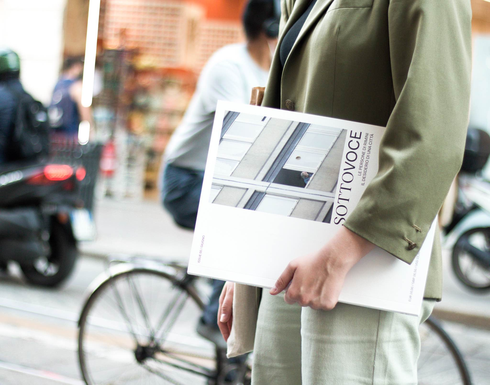 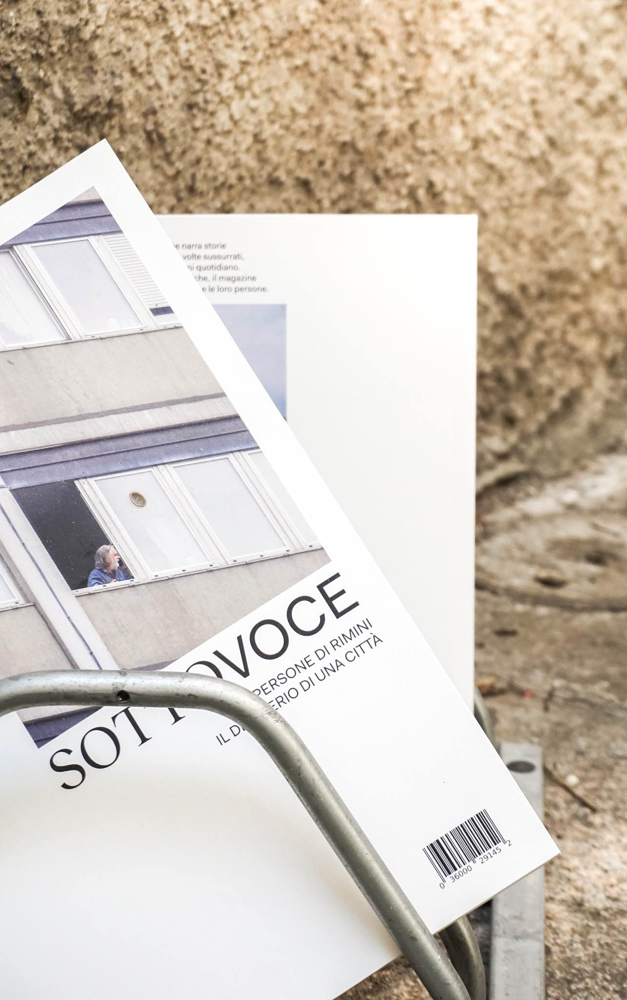
The narrative thread of this issue unfolds on the theme of desire. Desire meant as the will to create and receive aggregation. In Rimini everyone is welcomed and welcome in turn. Everyone’s intimate desire is to let everyone feel they have a place in the network of social relations. As if everyone preferred the beauty of giving space rather than the rust of taking space. This welcoming spirit emerges from two interviews and four articles. The first ones, with a familiar tone, investigate the stories of people who have found a quiet and a warm place place in the city, where to feel home. The second ones, return stories of different realities that have helped to create a point of aggregation, a social terrain, a geographical mantle to listen to diversity.
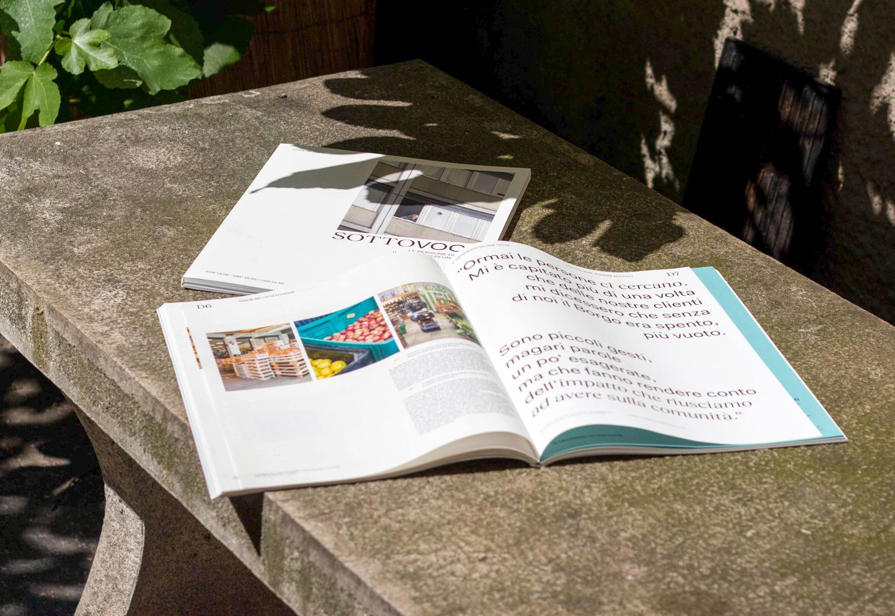 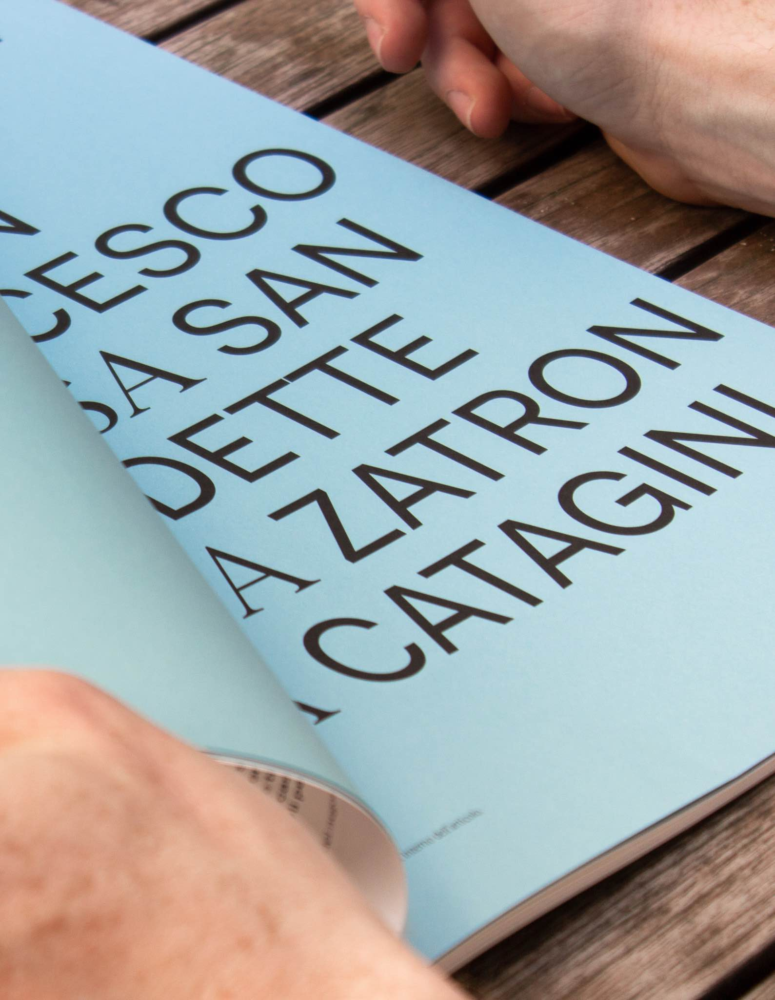 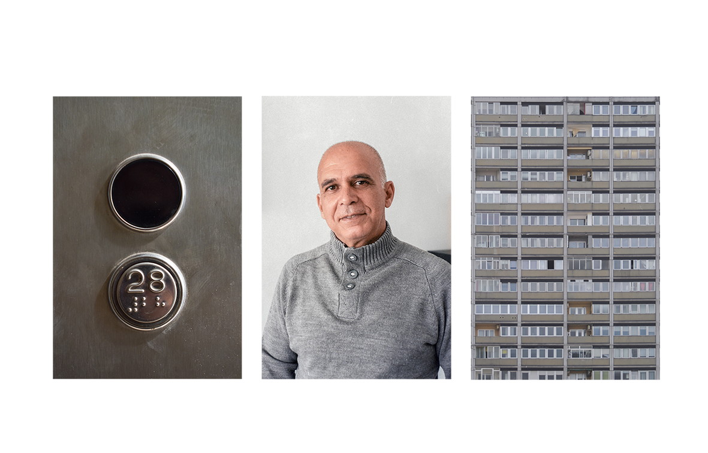 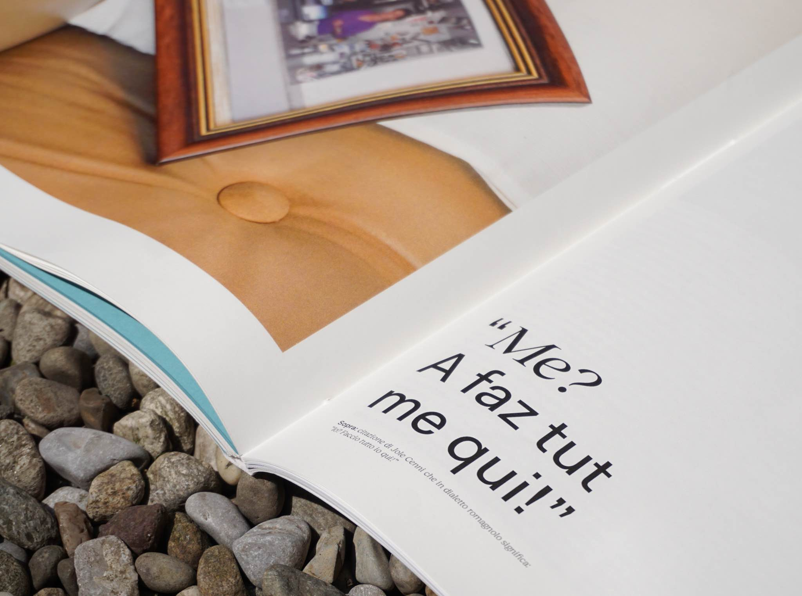 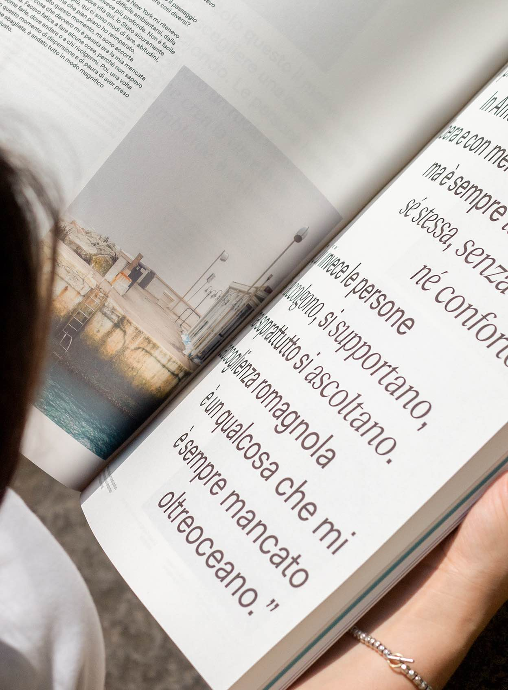 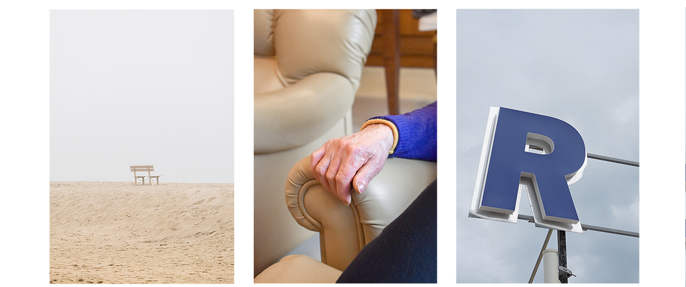All the people interviewd and photographed where specifically choosen for their extraordinary everyday life in order to return the most intimate and real spirit of the city. You can find more about the project by watching the videopromo of the 0 issue of the magazine.
Project made with Aurora Antonini, Camilla De Amicis, Federica Inzani, Federico Meani, Sara Zanardi
 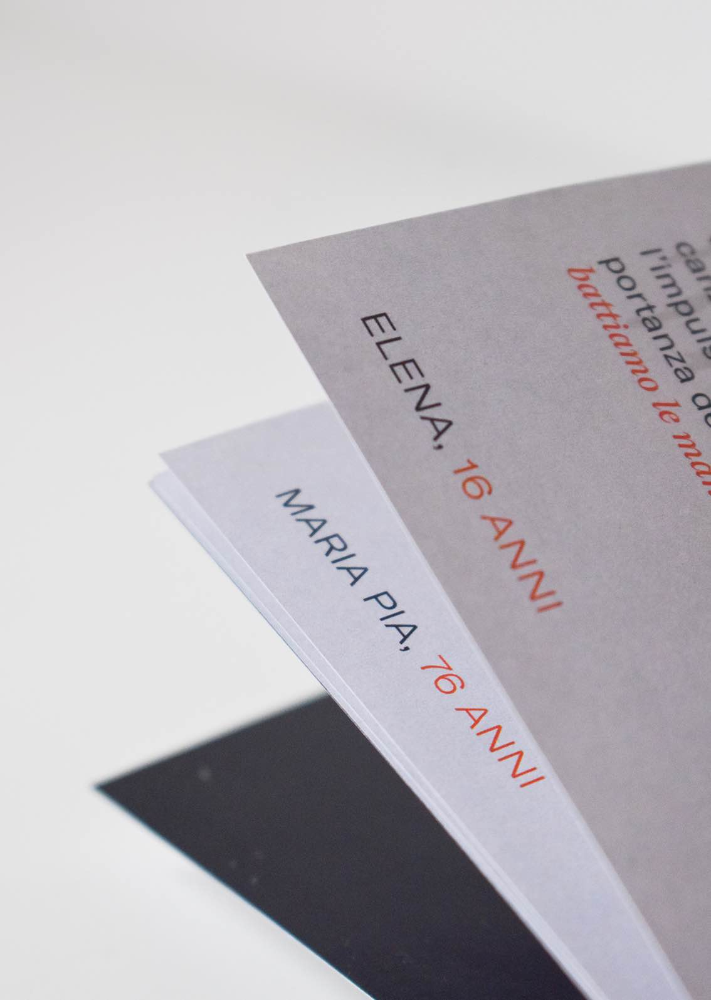
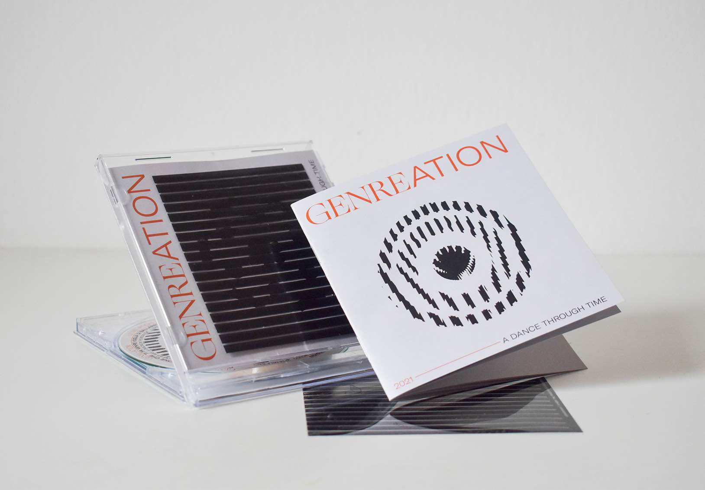
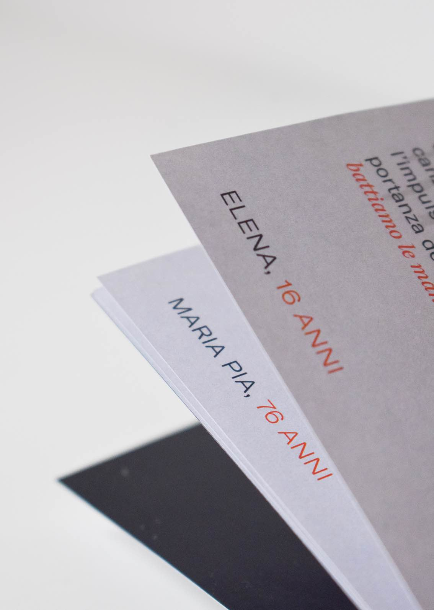
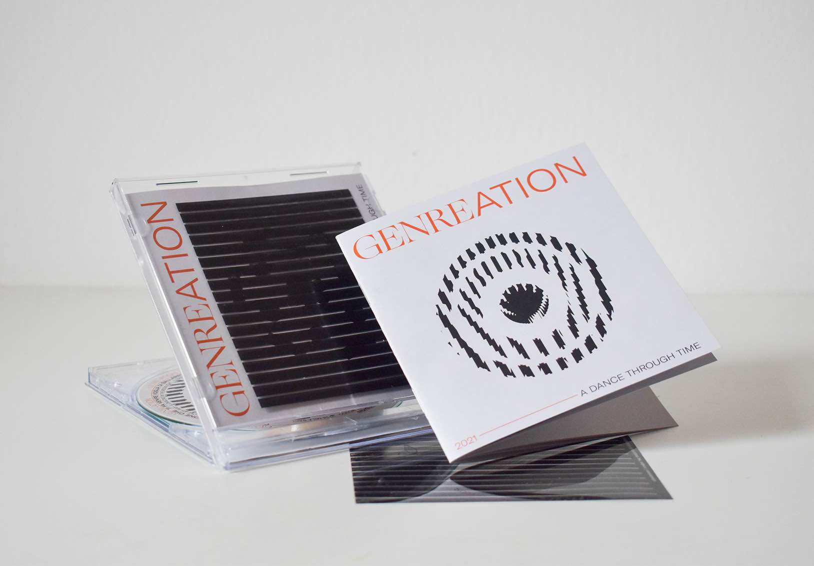

 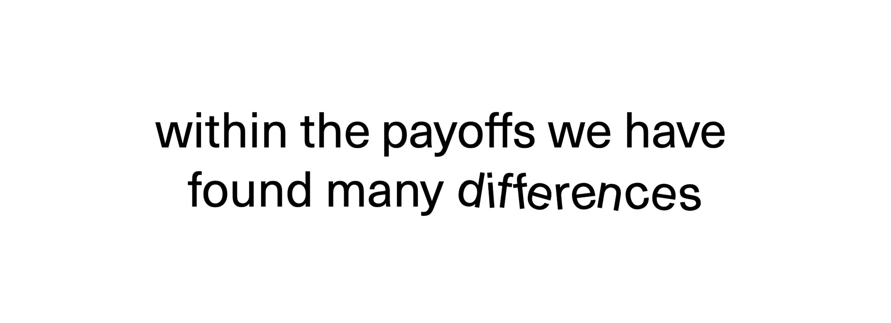
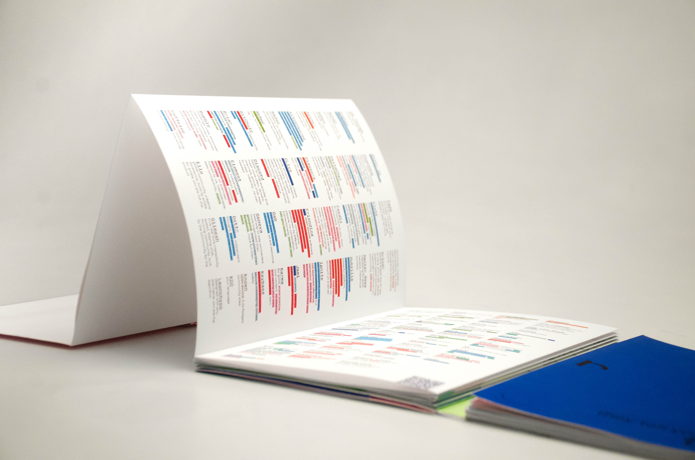
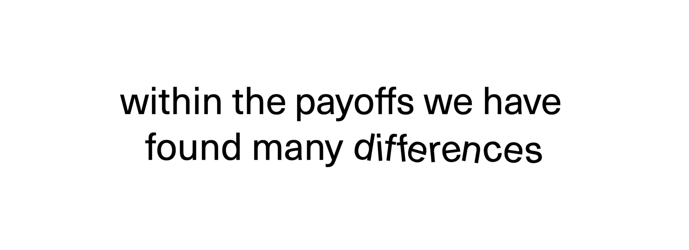
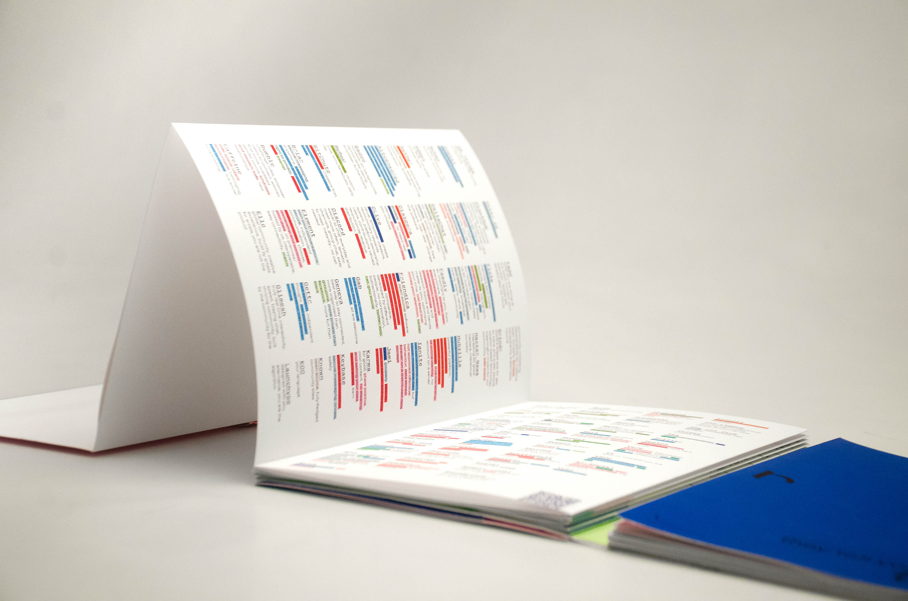